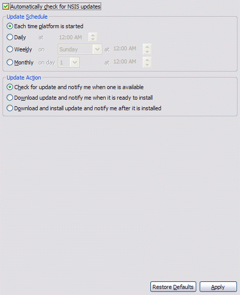

Preferences
Automatic NSIS Updates
These preferences are used to configure NSIS Update to automatically search for updates to NSIS on a scheduled basis.
Please see the important notes regarding NSIS Update.

- Automatically check for NSIS updates
- If this option is selected, then NSIS Update will be scheduled to run as per the schedule specified below. ← Back
- Update Schedule
- One of the following four scheduling options may be chosen:
- Each time the platform is started (the default).
- Daily, at a specific time.*
- Weekly, on a specific weekday and time.*
- Monthly, on a specific day of the month and time. If the specified day is greater than the last day for the next scheduled month, the update will be run on the last day of the month. e.g., if the specified day is 31 and the next scheduled month is April, the update will run on April 30th.*
← Back
- Update Action
- One of the following three actions may be performed when NSIS update is run:
- Check for an update and notify if one is available (the default).
- When this option is chosen, the user is notified via a message box that an update is available. Upon acceptance, the update is then interactively downloaded and the NSIS setup is launched.
- Download an update, if available, and notify when it is ready to install.
- When this option is chosen, the user is notified via a message box that an update has been downloaded and is ready to install. Upon acceptance, the NSIS setup is launched. If the user decides not to install the update at the time, the downloaded files are cached and reused the next time NSIS Update is run, unless a newer version is available.
- Download and install an update, if available, and notify when it is installed.
- When this option is chosen, NSIS Update downloads and silently installs the update. Note that this will overwrite the NSIS installation in the current defined NSIS home. If no NSIS home is currently defined, then NSIS will be installed in its default location.
← Back
Previous | Contents | Next
Copyright © 2004-2010 Sunil Kamath (IcemanK).